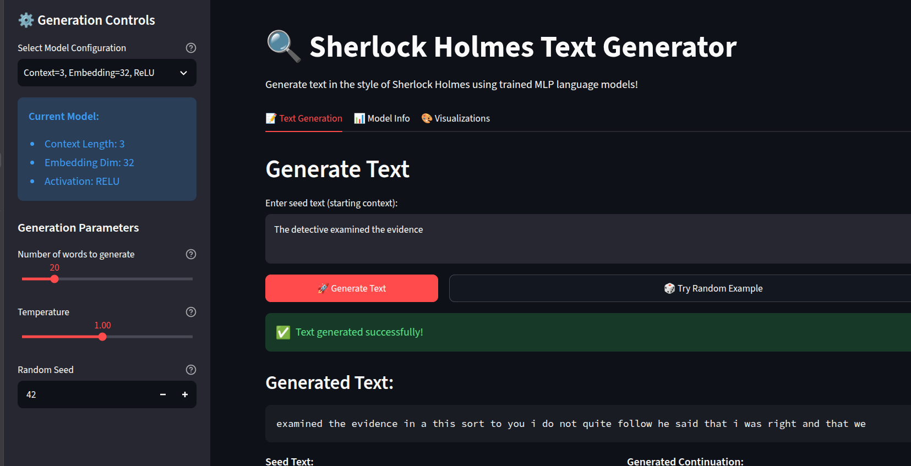
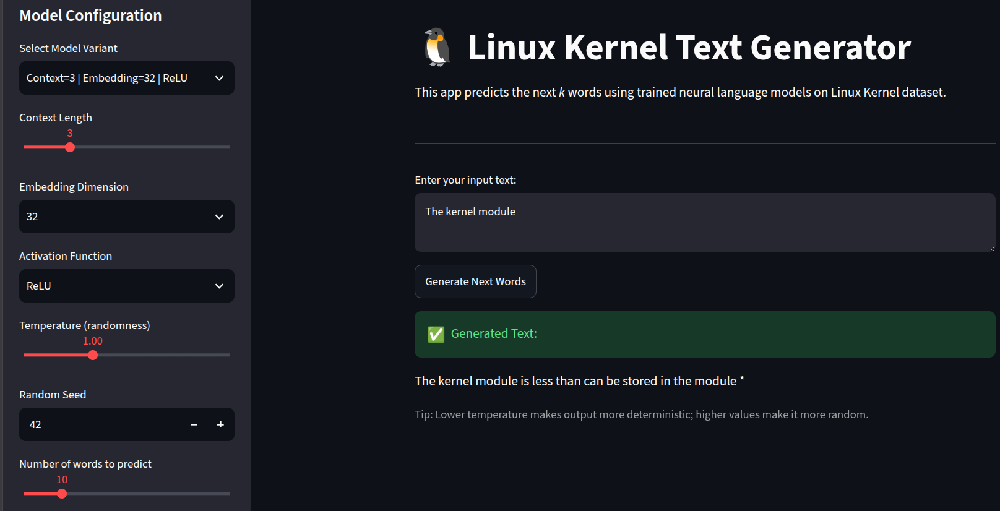

Overview
This project explores next-word prediction using a multilayer perceptron (MLP), comparing two models trained on very different kinds of text: The Adventures of Sherlock Holmes for natural language, and Linux Kernel source code for structured language. Both models use a fixed window of previous words to predict the next word, allowing a direct comparison of grammatical patterns, code syntax, and generalisation.


Approach
- 01Prepare textClean text and build a word vocabulary
- 02Create contextsUse a fixed window of previous words
- 03Train an MLPEmbeddings · hidden layers · softmax
- 04Inspect embeddingsVisualise word relationships
- 05Deploy generationStreamlit controls and temperature sampling
Each context window is mapped to learned word embeddings and passed through fully connected layers with a nonlinear activation. The output layer assigns probabilities to the vocabulary; generation then selects a next word from this distribution and feeds it back into the context. The Streamlit apps let users experiment with context length, model variants, and temperature to change the diversity of generated text.
Dataset comparison
| Aspect | Sherlock Holmes | Linux Kernel |
|---|---|---|
| Text type | Narrative English with varied sentence structure and semantic relationships. | C source code with keywords, identifiers, operators, and recurring syntax patterns. |
| Context | Meaning often depends on broader narrative and flexible word choices. | Local syntax patterns are often repetitive, though program logic can depend on distant context. |
| Generation behaviour | Often produces fragments that resemble English grammar but can lose semantic coherence. | Can reproduce code-like patterns and familiar constructs, without reliably producing meaningful program logic. |
Main observation: source code offers more predictable local patterns, while natural language has greater semantic and stylistic variation. However, syntactically plausible output is not the same as a correct program or a coherent story.
Training and model behaviour
The loss curves showed overfitting in both datasets: training loss continued to fall while validation performance weakened. The Sherlock Holmes model reached a validation accuracy of around 10%. The Linux Kernel model peaked at approximately 23% validation accuracy before declining. These results suggest that the models learned recurring patterns in the training text but did not generalise consistently to unseen contexts.
Increasing the context window from 3 to 5 words gave a modest improvement in local pattern capture. Increasing the embedding dimension from 32 to 64 added capacity, but also made overfitting more apparent. ReLU generally trained faster, while Tanh showed somewhat smoother validation behaviour in the tested configurations.
Embedding visualisation
The learned word embeddings were visualised with dimensionality reduction to examine whether words with related roles or usage patterns occupied nearby regions. The natural-language embeddings showed possible groupings among words used in similar contexts, but with less distinct boundaries. The code embeddings showed more structurally organised groups, including keywords, identifiers, and symbols. These patterns are qualitative: a two-dimensional projection can distort distances, and nearby embeddings do not by themselves prove that the model understands meaning or program semantics.
What the models can—and cannot—learn
- Local patterns are learnable. A fixed context window can capture common word sequences and familiar code constructs.
- Natural language needs context. Grammatical-looking text can still be inconsistent with the surrounding story.
- Code needs more than syntax. Plausible keywords and punctuation do not guarantee valid logic or compilable code.
- Capacity needs regularisation. Low training loss alone is not evidence of good generalisation; validation curves are essential.
Overall, this comparison shows the limits of a feed-forward model with a short context window. It can imitate surface-level patterns in both prose and code, but it has limited ability to represent long-range dependencies. Sequence-aware architectures such as RNNs and Transformers are better suited to modelling those dependencies.
Tech stack
- Python
- PyTorch
- MLP
- Word embeddings
- t-SNE / PCA
- Matplotlib
- Streamlit